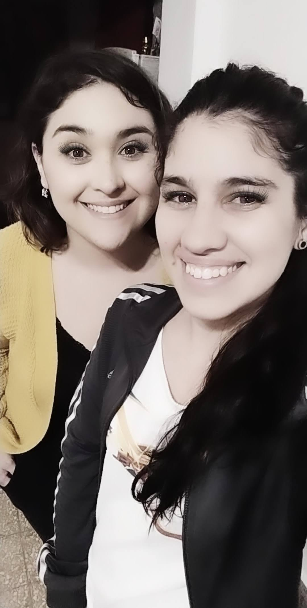

Es un emprendimiento que nacio en Mayo del 2020, ideado por Yanina y Angeles, dos amigas, que viven en Ezeiza. Ambas madres, a partir del festejo de cumple de una de las hijas de ellas, se plantearon por que no hacer Box party, para que todos puedan festejar estando en casa, porque no hay nada mas importante para un niño que sentirse especial el dia de su cumple. Con el correr de los meses y las modificaciones en el contexto pandemico , se fueron adaptando y pasaron de hacer los pequeños box party a ofrecer ambientaciones en todo tipo de festejos
